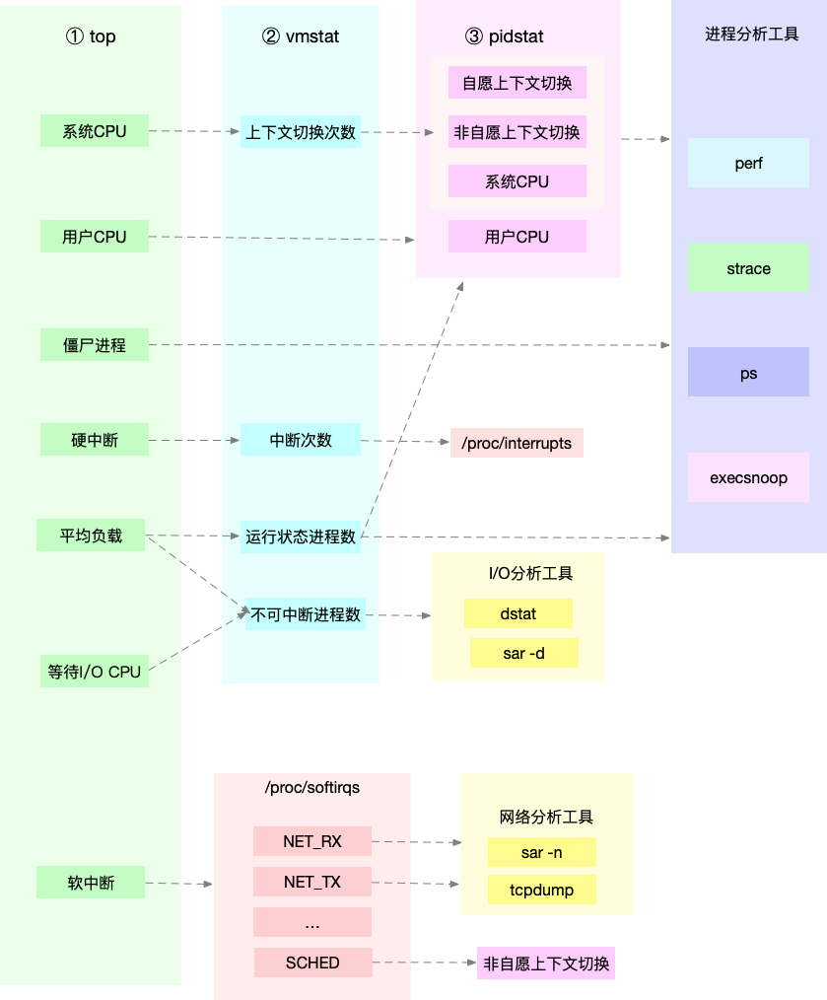
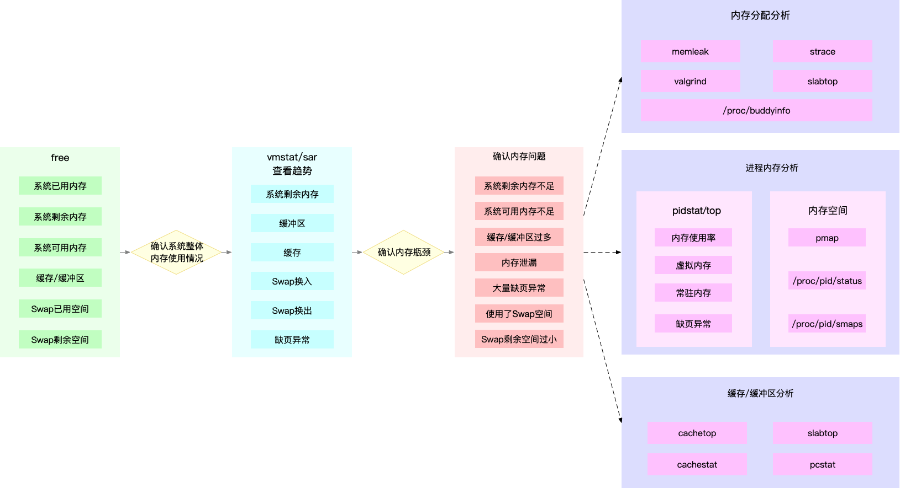
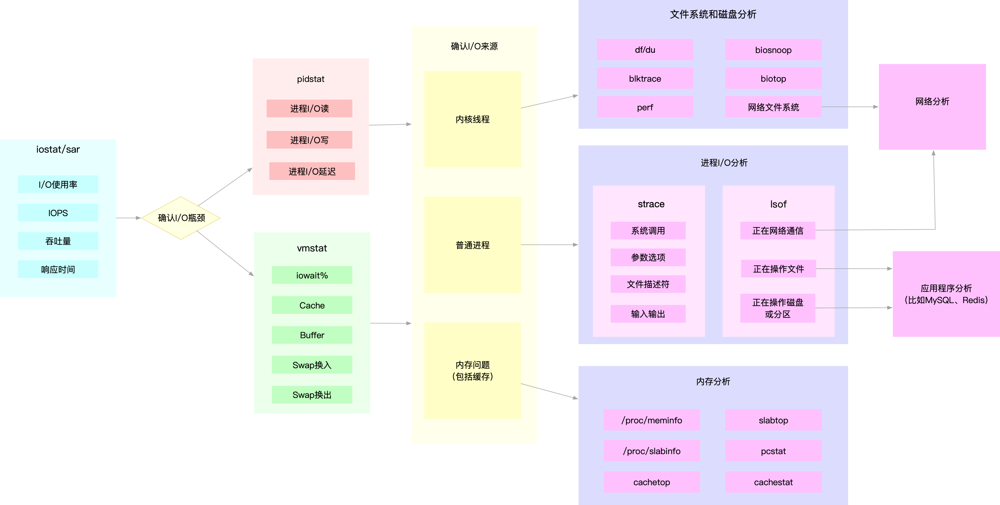
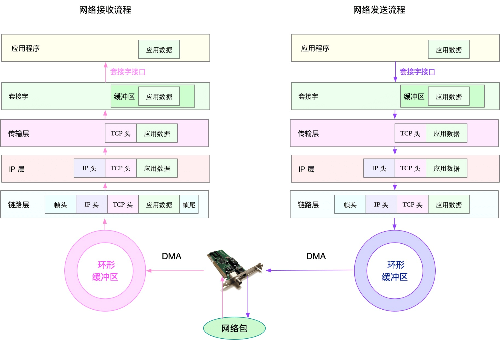

- 00 开篇词 别再让Linux性能问题成为你的绊脚石.md.html
- 01 如何学习Linux性能优化？.md.html
- 02 基础篇：到底应该怎么理解“平均负载”？.md.html
- 03 基础篇：经常说的 CPU 上下文切换是什么意思？（上）.md.html
- 04 基础篇：经常说的 CPU 上下文切换是什么意思？（下）.md.html
- 05 基础篇：某个应用的CPU使用率居然达到100%，我该怎么办？.md.html
- 06 案例篇：系统的 CPU 使用率很高，但为啥却找不到高 CPU 的应用？.md.html
- 07 案例篇：系统中出现大量不可中断进程和僵尸进程怎么办？（上）.md.html
- 08 案例篇：系统中出现大量不可中断进程和僵尸进程怎么办？（下）.md.html
- 09 基础篇：怎么理解Linux软中断？.md.html
- 10 案例篇：系统的软中断CPU使用率升高，我该怎么办？.md.html
- 11 套路篇：如何迅速分析出系统CPU的瓶颈在哪里？.md.html
- 12 套路篇：CPU 性能优化的几个思路.md.html
- 13 答疑（一）：无法模拟出 RES 中断的问题，怎么办？.md.html
- 14 答疑（二）：如何用perf工具分析Java程序？.md.html
- 15 基础篇：Linux内存是怎么工作的？.md.html
- 16 基础篇：怎么理解内存中的Buffer和Cache？.md.html
- 17 案例篇：如何利用系统缓存优化程序的运行效率？.md.html
- 18 案例篇：内存泄漏了，我该如何定位和处理？.md.html
- 19 案例篇：为什么系统的Swap变高了（上）.md.html
- 20 案例篇：为什么系统的Swap变高了？（下）.md.html
- 21 套路篇：如何“快准狠”找到系统内存的问题？.md.html
- 22 答疑（三）：文件系统与磁盘的区别是什么？.md.html
- 23 基础篇：Linux 文件系统是怎么工作的？.md.html
- 24 基础篇：Linux 磁盘I_O是怎么工作的（上）.md.html
- 25 基础篇：Linux 磁盘I_O是怎么工作的（下）.md.html
- 26 案例篇：如何找出狂打日志的“内鬼”？.md.html
- 27 案例篇：为什么我的磁盘I_O延迟很高？.md.html
- 28 案例篇：一个SQL查询要15秒，这是怎么回事？.md.html
- 29 案例篇：Redis响应严重延迟，如何解决？.md.html
- 30 套路篇：如何迅速分析出系统I_O的瓶颈在哪里？.md.html
- 31 套路篇：磁盘 I_O 性能优化的几个思路.md.html
- 32 答疑（四）：阻塞、非阻塞 I_O 与同步、异步 I_O 的区别和联系.md.html
- 33 关于 Linux 网络，你必须知道这些（上）.md.html
- 34 关于 Linux 网络，你必须知道这些（下）.md.html
- 35 基础篇：C10K 和 C1000K 回顾.md.html
- 36 套路篇：怎么评估系统的网络性能？.md.html
- 37 案例篇：DNS 解析时快时慢，我该怎么办？.md.html
- 38 案例篇：怎么使用 tcpdump 和 Wireshark 分析网络流量？.md.html
- 39 案例篇：怎么缓解 DDoS 攻击带来的性能下降问题？.md.html
- 40 案例篇：网络请求延迟变大了，我该怎么办？.md.html
- 41 案例篇：如何优化 NAT 性能？（上）.md.html
- 42 案例篇：如何优化 NAT 性能？（下）.md.html
- 43 套路篇：网络性能优化的几个思路（上）.md.html
- 44 套路篇：网络性能优化的几个思路（下）.md.html
- 45 答疑（五）：网络收发过程中，缓冲区位置在哪里？.md.html
- 46 案例篇：为什么应用容器化后，启动慢了很多？.md.html
- 47 案例篇：服务器总是时不时丢包，我该怎么办？（上）.md.html
- 48 案例篇：服务器总是时不时丢包，我该怎么办？（下）.md.html
- 49 案例篇：内核线程 CPU 利用率太高，我该怎么办？.md.html
- 50 案例篇：动态追踪怎么用？（上）.md.html
- 51 案例篇：动态追踪怎么用？（下）.md.html
- 52 案例篇：服务吞吐量下降很厉害，怎么分析？.md.html
- 53 套路篇：系统监控的综合思路.md.html
- 54 套路篇：应用监控的一般思路.md.html
- 55 套路篇：分析性能问题的一般步骤.md.html
- 56 套路篇：优化性能问题的一般方法.md.html
- 57 套路篇：Linux 性能工具速查.md.html
- 58 答疑（六）：容器冷启动如何性能分析？.md.html
- 加餐（一） 书单推荐：性能优化和Linux 系统原理.md.html
- 加餐（二） 书单推荐：网络原理和 Linux 内核实现.md.html
- 用户故事 “半路出家 ”，也要顺利拿下性能优化！.md.html
- 用户故事 运维和开发工程师们怎么说？.md.html
- 结束语 愿你攻克性能难关.md.html
- 捐赠
55 套路篇：分析性能问题的一般步骤
你好，我是倪朋飞。
上一节，我们一起学习了，应用程序监控的基本思路，先简单回顾一下。
应用程序的监控，可以分为指标监控和日志监控两大块。
指标监控，主要是对一定时间段内的性能指标进行测量，然后再通过时间序列的方式，进行处理、存储和告警。
而日志监控，则可以提供更详细的上下文信息，通常通过 ELK 技术栈，来进行收集、索引和图形化展示。
在跨多个不同应用的复杂业务场景中，你还可以构建全链路跟踪系统。这样，你就可以动态跟踪调用链中各个组件的性能，生成整个应用的调用拓扑图，从而加快定位复杂应用的性能问题。
不过，如果你收到监控系统的告警，发现系统资源或者应用程序出现性能瓶颈，又该如何进一步分析它的根源呢？今天，我就分别从系统资源瓶颈和应用程序瓶颈这两个角度，带你一起来看看，性能分析的一般步骤。
系统资源瓶颈
首先来看系统资源的瓶颈，这也是最为常见的性能问题。
在系统监控的综合思路篇中，我曾经介绍过，系统资源的瓶颈，可以通过 USE 法，即使用率、饱和度以及错误数这三类指标来衡量。系统的资源，可以分为硬件资源和软件资源两类。
如 CPU、内存、磁盘和文件系统以及网络等，都是最常见的硬件资源。
而文件描述符数、连接跟踪数、套接字缓冲区大小等，则是典型的软件资源。
这样，在你收到监控系统告警时，就可以对照这些资源列表，再根据指标的不同来进行定位。
实际上，咱们专栏前四大模块的核心，正是学会去分析这些资源瓶颈导致的性能问题。所以，当你碰到了系统资源的性能瓶颈时，前面模块的所有思路、方法以及工具，都完全可以照用。
接下来，我就从 CPU 性能、内存性能、磁盘和文件系统 I/O 性能以及网络性能等四个方面，带你回顾一下它们的分析步骤。
CPU性能分析
第一种最常见的系统资源是 CPU。关于 CPU 的性能分析方法，我在如何迅速分析出系统CPU的瓶颈中，已经为你整理了一个迅速分析 CPU 性能瓶颈的思路。
还记得这张图吗？利用 top、vmstat、pidstat、strace 以及 perf 等几个最常见的工具，获取 CPU 性能指标后，再结合进程与 CPU 的工作原理，就可以迅速定位出 CPU 性能瓶颈的来源。

实际上，top、pidstat、vmstat 这类工具所汇报的 CPU 性能指标，都源自 /proc 文件系统（比如/proc/loadavg、/proc/stat、/proc/softirqs 等）。这些指标，都应该通过监控系统监控起来。虽然并非所有指标都需要报警，但这些指标却可以加快性能问题的定位分析。
比如说，当你收到系统的用户 CPU 使用率过高告警时，从监控系统中直接查询到，导致 CPU 使用率过高的进程；然后再登录到进程所在的 Linux 服务器中，分析该进程的行为。
你可以使用 strace，查看进程的系统调用汇总；也可以使用 perf 等工具，找出进程的热点函数；甚至还可以使用动态追踪的方法，来观察进程的当前执行过程，直到确定瓶颈的根源。
内存性能分析
说完了 CPU 的性能分析，再来看看第二种系统资源，即内存。关于内存性能的分析方法，我在如何“快准狠”找到系统内存的问题中，也已经为你整理了一个快速分析的思路。
下面这张图，就是一个迅速定位内存瓶颈的流程。我们可以通过 free 和 vmstat 输出的性能指标，确认内存瓶颈；然后，再根据内存问题的类型，进一步分析内存的使用、分配、泄漏以及缓存等，最后找出问题的来源。

同 CPU 性能一样，很多内存的性能指标，也来源于 /proc 文件系统（比如 /proc/meminfo、/proc/slabinfo等），它们也都应该通过监控系统监控起来。这样，当你收到内存告警时，就可以从监控系统中，直接得到上图中的各项性能指标，从而加快性能问题的定位过程。
比如说，当你收到内存不足的告警时，首先可以从监控系统中。找出占用内存最多的几个进程。然后，再根据这些进程的内存占用历史，观察是否存在内存泄漏问题。确定出最可疑的进程后，再登录到进程所在的 Linux 服务器中，分析该进程的内存空间或者内存分配，最后弄清楚进程为什么会占用大量内存。
磁盘和文件系统I/O性能分析
接下来，我们再来看第三种系统资源，即磁盘和文件系统的 I/O。关于磁盘和文件系统的 I/O 性能分析方法，我在如何迅速分析出系统I/O的瓶颈中也已经为你整理了一个快速分析的思路。
我们来看下面这张图。当你使用 iostat ，发现磁盘I/O 存在性能瓶颈（比如 I/O 使用率过高、响应时间过长或者等待队列长度突然增大等）后，可以再通过 pidstat、 vmstat 等，确认 I/O 的来源。接着，再根据来源的不同，进一步分析文件系统和磁盘的使用率、缓存以及进程的 I/O 等，从而揪出 I/O 问题的真凶。

同 CPU 和内存性能类似，很多磁盘和文件系统的性能指标，也来源于 /proc 和 /sys 文件系统（比如 /proc/diskstats、/sys/block/sda/stat 等）。自然，它们也应该通过监控系统监控起来。这样，当你收到 I/O 性能告警时，就可以从监控系统中，直接得到上图中的各项性能指标，从而加快性能定位的过程。
比如说，当你发现某块磁盘的 I/O 使用率为 100% 时，首先可以从监控系统中，找出 I/O 最多的进程。然后，再登录到进程所在的 Linux 服务器中，借助 strace、lsof、perf 等工具，分析该进程的 I/O 行为。最后，再结合应用程序的原理，找出大量 I/O 的原因。
网络性能分析
最后的网络性能，其实包含两类资源，即网络接口和内核资源。在网络性能优化的几个思路中，我也曾提到过，网络性能的分析，要从 Linux 网络协议栈的原理来切入。下面这张图，就是 Linux 网络协议栈的基本原理，包括应用层、套机字接口、传输层、网络层以及链路层等。

而要分析网络的性能，自然也是要从这几个协议层入手，通过使用率、饱和度以及错误数这几类性能指标，观察是否存在性能问题。比如 ：
在链路层，可以从网络接口的吞吐量、丢包、错误以及软中断和网络功能卸载等角度分析；
在网络层，可以从路由、分片、叠加网络等角度进行分析；
在传输层，可以从 TCP、UDP 的协议原理出发，从连接数、吞吐量、延迟、重传等角度进行分析；
在应用层，可以从应用层协议（如 HTTP 和 DNS）、请求数（QPS）、套接字缓存等角度进行分析。
同前面几种资源类似，网络的性能指标也都来源于内核，包括 /proc 文件系统（如 /proc/net）、网络接口以及conntrack等内核模块。这些指标同样需要被监控系统监控。这样，当你收到网络告警时，就可以从监控系统中，查询这些协议层的各项性能指标，从而更快定位出性能问题。
比如，当你收到网络不通的告警时，就可以从监控系统中，查找各个协议层的丢包指标，确认丢包所在的协议层。然后，从监控系统的数据中，确认网络带宽、缓冲区、连接跟踪数等软硬件，是否存在性能瓶颈。最后，再登录到发生问题的 Linux 服务器中，借助 netstat、tcpdump、bcc 等工具，分析网络的收发数据，并且结合内核中的网络选项以及 TCP 等网络协议的原理，找出问题的来源。
应用程序瓶颈
除了以上这些来自网络资源的瓶颈外，还有很多瓶颈，其实直接来自应用程序。比如，最典型的应用程序性能问题，就是吞吐量（并发请求数）下降、错误率升高以及响应时间增大。
不过，在我看来，这些应用程序性能问题虽然各种各样，但就其本质来源，实际上只有三种，也就是资源瓶颈、依赖服务瓶颈以及应用自身的瓶颈。
第一种资源瓶颈，其实还是指刚才提到的 CPU、内存、磁盘和文件系统 I/O、网络以及内核资源等各类软硬件资源出现了瓶颈，从而导致应用程序的运行受限。对于这种情况，我们就可以用前面系统资源瓶颈模块提到的各种方法来分析。
第二种依赖服务的瓶颈，也就是诸如数据库、分布式缓存、中间件等应用程序，直接或者间接调用的服务出现了性能问题，从而导致应用程序的响应变慢，或者错误率升高。这说白了就是跨应用的性能问题，使用全链路跟踪系统，就可以帮你快速定位这类问题的根源。
最后一种，应用程序自身的性能问题，包括了多线程处理不当、死锁、业务算法的复杂度过高等等。对于这类问题，在我们前面讲过的应用程序指标监控以及日志监控中，观察关键环节的耗时和内部执行过程中的错误，就可以帮你缩小问题的范围。
不过，由于这是应用程序内部的状态，外部通常不能直接获取详细的性能数据，所以就需要应用程序在设计和开发时，就提供出这些指标，以便监控系统可以了解应用程序的内部运行状态。
如果这些手段过后还是无法找出瓶颈，你还可以用系统资源模块提到的各类进程分析工具，来进行分析定位。比如：
你可以用 strace，观察系统调用；
使用 perf 和火焰图，分析热点函数；
甚至使用动态追踪技术，来分析进程的执行状态。
当然，系统资源和应用程序本来就是相互影响、相辅相成的一个整体。实际上，很多资源瓶颈，也是应用程序自身运行导致的。比如，进程的内存泄漏，会导致系统内存不足；进程过多的 I/O 请求，会拖慢整个系统的 I/O 请求等。
所以，很多情况下，资源瓶颈和应用自身瓶颈，其实都是同一个问题导致的，并不需要我们重复分析。
小结
今天，我带你从系统资源瓶颈和应用程序瓶颈这两个角度，梳理了性能问题分析的一般步骤。
从系统资源瓶颈的角度来说，USE 法是最为有效的方法，即从使用率、饱和度以及错误数这三个方面，来分析 CPU、内存、磁盘和文件系统 I/O、网络以及内核资源限制等各类软硬件资源。关于这些资源的分析方法，我也带你一起回顾了咱们专栏前面几大模块的分析套路。
从应用程序瓶颈的角度来说，我们可以把性能问题的来源，分为资源瓶颈、依赖服务瓶颈以及应用自身瓶颈这三类。
资源瓶颈跟系统资源瓶颈，本质是一样的。
依赖服务瓶颈，你可以使用全链路跟踪系统进行定位。
而应用自身的问题，你可以通过系统调用、热点函数，或者应用自身的指标监控以及日志监控等，进行分析定位。
值得注意的是，虽然我把瓶颈分为了系统和应用两个角度，但在实际运行时，这两者往往是相辅相成、相互影响的。系统是应用的运行环境，系统的瓶颈会导致应用的性能下降；而应用的不合理设计，也会引发系统资源的瓶颈。我们做性能分析，就是要结合应用程序和操作系统的原理，揪出引发问题的真凶。
思考
最后，我想邀请你一起来聊聊，你平时是怎么分析和定位性能问题的？有没有哪个印象深刻的经历可以跟我分享呢？你可以结合我的讲述，总结自己的思路。
欢迎在留言区和我讨论，也欢迎把这篇文章分享给你的同事、朋友。我们一起在实战中演练，在交流中进步。
© 2019 - 2023 Liangliang Lee. Powered by gin and hexo-theme-book.